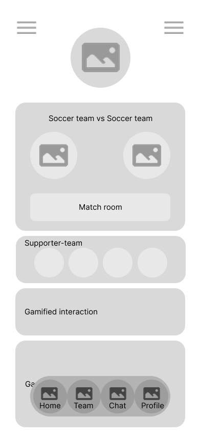
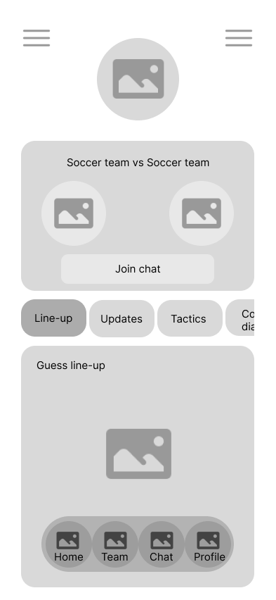
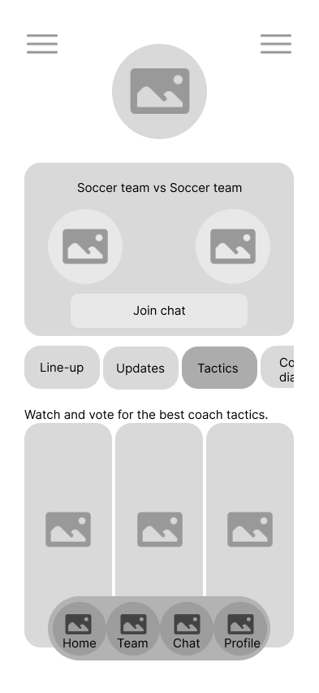
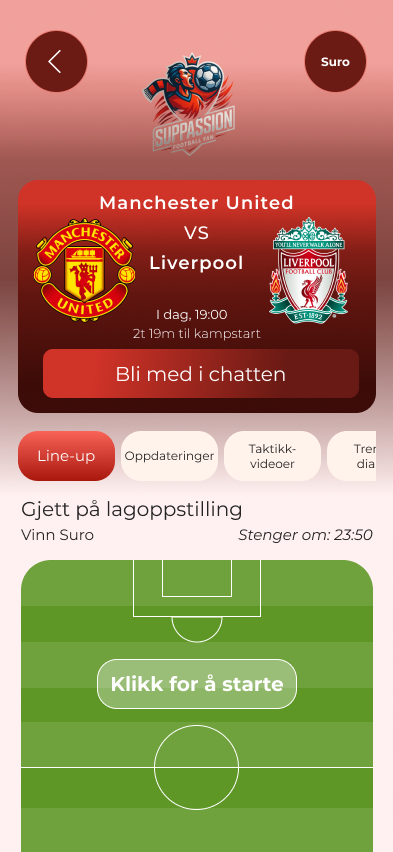
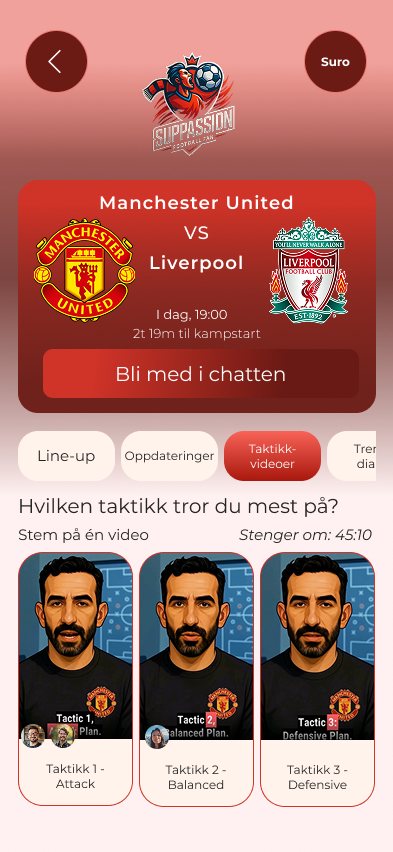
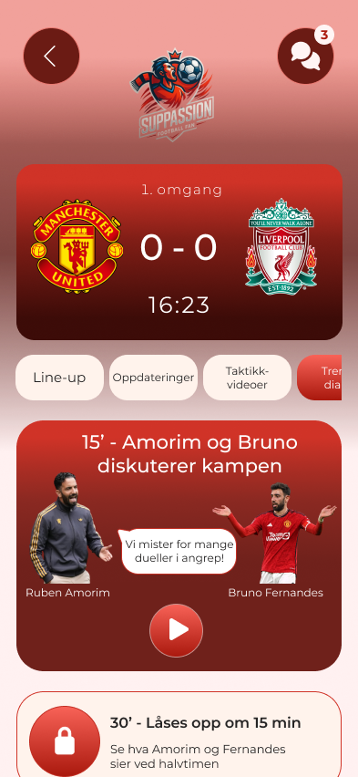
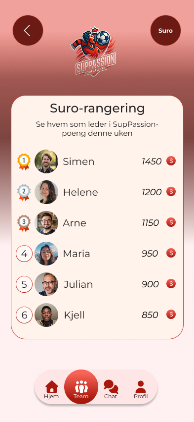
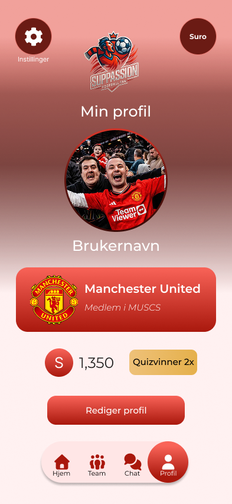

Project
A concept for a social football companion app.
Case study
Designing a social football app that recreates the feeling of watching a match together.

Project
A concept for a social football companion app.
Focus
Community, live interaction, and gamified match engagement.
Goal
Make the match experience feel more shared, active, and fun.
The concept
The main part of the app is the match room, whcih is a shared live space that opens before kickoff and stays active throughout the game. Inside it, supporters can join smaller groups, communicate through text and audio, participate in playful prediction-based activities, and follow the match through social and interactive layers.
What shaped the experience
The concept focused on recreating the feeling of watching the game alongside other supporters.
Every feature was designed to make the user feel involved, not just informed.
Gamified elements helped turn match engagement into something social and ongoing.
Process
Instead of redesigning an existing product, I had to define the experience from the ground up. What the app should feel like, what kind of social behaviors it should support, and how to structure a live environment without making it feel chaotic or overwhelming.

Early concept exploration and structure thinking.

Wireframes used to shape the live match experience.

Wireframes used explore AI coach tactics.
The match room
The match room tied the concept together. It functioned as the heart of the app, as live space where users could follow the game, interact with friends, respond to dynamic content, and stay engaged throughout the full match.

Interactive moments
Users could guess the lineup, vote on AI-generated tactical videos, react to humorous coach-captain dialogues influenced by the course of the match, and compete in quizzes with friends. These features were designed to strengthen both entertainment and involvement.


Gamification
By rewarding activity and correct choices with points, the app made engagement more visible and ongoing. The leaderboard added a playful competitive layer that encouraged users to stay involved and return to the shared experience over time.


Design challenge
Since the concept brought together chat, live content, predictions, gamification, and group dynamics, a major part of the design process was deciding how much should happen at once. The goal was not only to make the experience exciting, but also to keep it readable, structured, and easy to navigate.
Reflection
SupPassion was a chance to work more conceptually and think about interaction for a user group previously unfamiliar to me. It pushed me to design for social dynamics, live engagement, and group energy, while still grounding the experience in structure and usability.